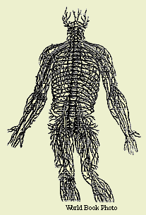

 |
Bone and Sinew De humani corporis fabrica (or, On the Structure of the Human Body) by Andreas Vesalius. Look inside the very brain and gut of the human body. A fully illustrated manual of human anatomy based on dissections performed by Vesalius himself. Drawings executed by artists employed in the workshops of Italy's best painters. Absolute must for medical students and physicians. Special features include directions for physicians on how to construct their own standing skeleton to use for medical reference. Medical credentials of Andreas Vesalius: At age 23, Vesalius became professor of anatomy and surgery at the University of Padua in Italy, where he taught for many years. Vesalius was court physician to Emperor Charles V of the Holy Roman Empire and to King Philip II of Spain. |